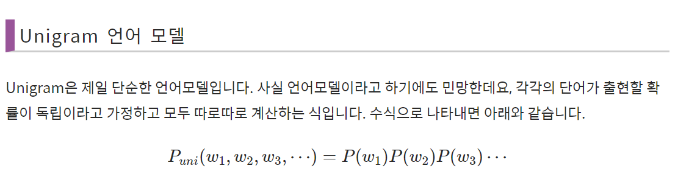
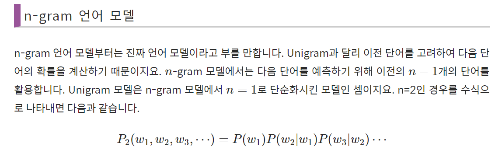
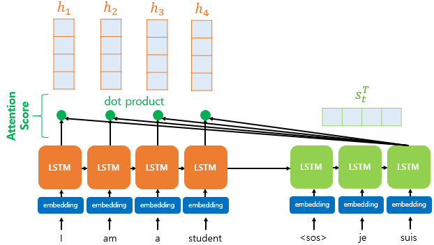
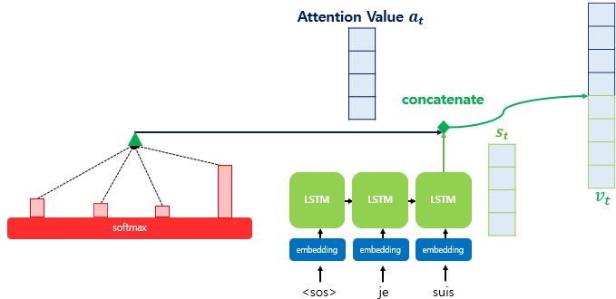
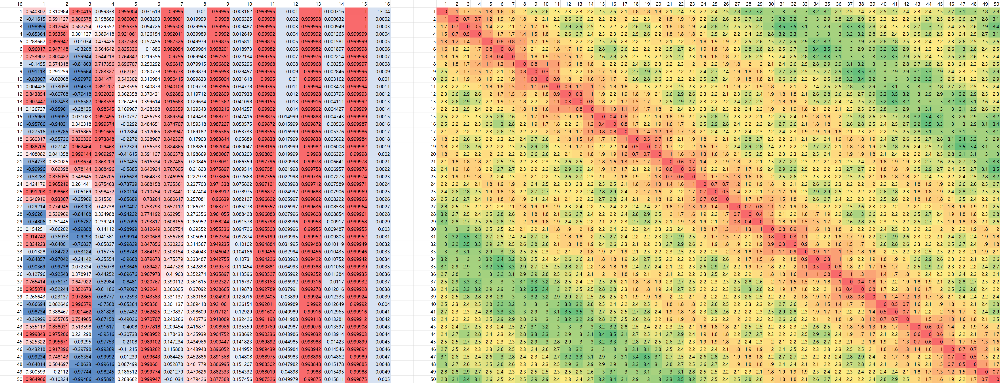
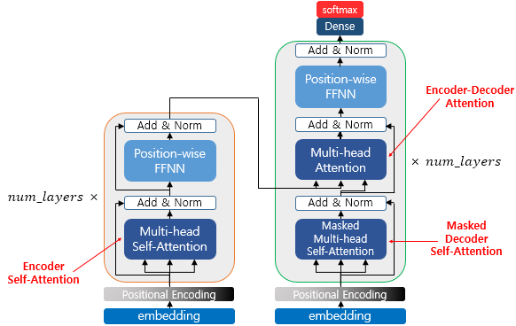
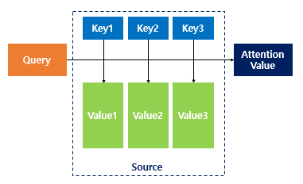
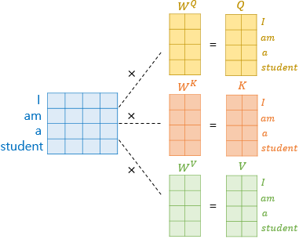
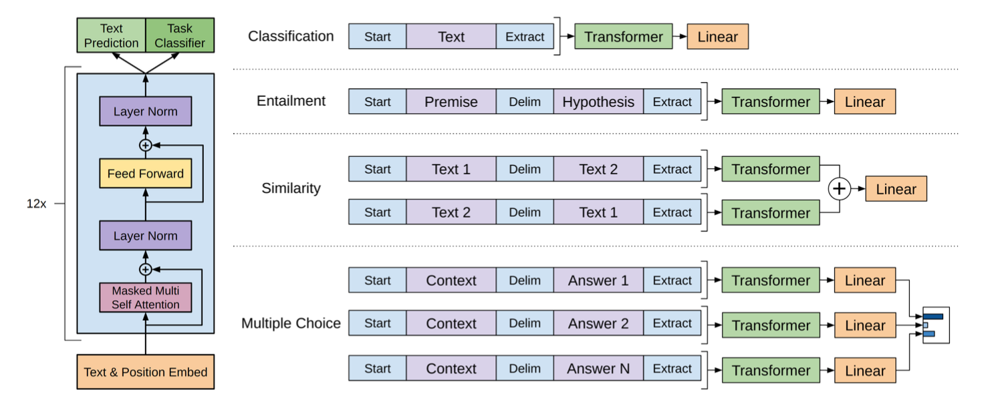
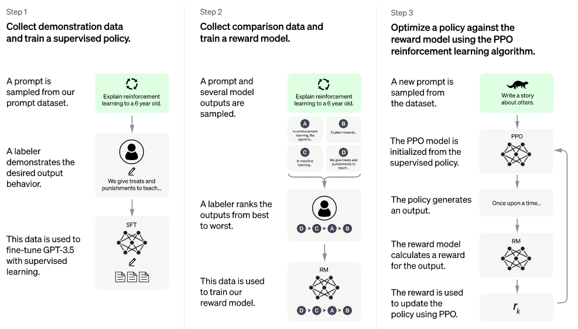

언어 모델은 확률 모델이다
Language Model
언어 모델 정의
앞의 단어들이 주어졌을 때 다음 단어가 무엇일 확률. 초거대 모델도 이 정의에서 한 발짝도 안 벗어난다.
신경망 이전 — 세어서 맞혔다
확률통계 모형
Unigram 언어 모델

n-gram 언어 모델
조합이 폭발한다 — n 을 키우면 세어야 할 경우의 수가 감당이 안 된다
본 적 없으면 0 이다 — 학습 데이터에 없던 조합은 확률이 0 이 된다
Neural Network 기반 언어 모델
네 편의 논문에서 시작했다
모델은 글자를 모른다
One-hot · 사전은 여덟 개짜리 예시사전이 5만 개면 단어 하나가 5만 칸짜리 벡터가 된다.
어떤 두 단어를 골라도 겹치는 자리가 없다 — “student 와 teacher 가 가깝다”를 적을 방법이 없다.
짧게 줄이고, 비슷한 것끼리 가까이
Embedding · 좌표는 개념 예시요즘 큰 모델은 이 임베딩을 따로 떼어 학습하지 않는다 — 모델 안에서 같이 학습된다. 그래도 단어를 벡터 공간에 놓는다는 발상은 그대로 남았다.
자기가 뱉은 단어를 다시 먹는다
Decoder · 종료 토큰이 나올 때까지처음 주는 입력은 시작 토큰 하나뿐이다. 나머지는 자기가 만든다.
영어 네 단어가 프랑스어 세 단어가 되어도 된다 — 길이를 미리 정하지 않는다.
번역기가 갑자기 문장다워진 그해
2014 논문 → 2016 가을 상용화구글이 밝힌 개선 폭 — 구문 기반 방식 대비 번역 오류 평균 60% 감소.
인코더 LSTM 8층 · 디코더 LSTM 8층 · 그 사이를 잇는 어텐션 한 층.
인코더 LSTM 8층 · 디코더 LSTM 8층 · 그 사이를 잇는 어텐션 한 층.
Sutskever et al. 2014 · Wu et al. arXiv:1609.08144
Google Research Blog 2016.11 · 뉴시스 2016.12.15
카카오 i 번역 서비스 안내
Google Research Blog 2016.11 · 뉴시스 2016.12.15
카카오 i 번역 서비스 안내
병목
문장 전체를
벡터 하나에 욱여넣는다
문장이 길어지면 앞쪽 기억이 끝까지 오지 못한다.
LSTM 으로도 GRU 로도 근본 해결이 안 됐다 — 통로 자체가 좁기 때문이다.
LSTM 으로도 GRU 로도 근본 해결이 안 됐다 — 통로 자체가 좁기 때문이다.
사실 네 개가 있었다
인코더는 단어마다 하나씩 만들고 있었다h₁ 은 “I” 까지의 요약이고 h₂ 는 “I am” 까지의 요약이다.
계산은 다 해 놓고 마지막 하나만 넘겼다. 나머지 셋은 그냥 버렸다.
앞 장의 병목은 구조의 한계가 아니었다. 있는 것을 안 쓴 결과였다.
다음 장 — 버린 것을 도로 주워 쓰면 어떻게 되나.
다음 장 — 버린 것을 도로 주워 쓰면 어떻게 되나.

Attention Score — 디코더 은닉상태와 인코더 은닉상태들의 내적
① Attention Score
얼마나
관련 있나

s_t^T × h_i
디코더의 현재 은닉상태와 인코더의 모든 은닉상태를 하나씩 내적한다.
내적은 방향이 같은 정도다
12주차 코사인 유사도와 같은 이야기
dot product 로 attention score 계산

Attention Distribution — softmax
② Attention Distribution
합이 1 인
비율로 바꾼다
점수를 소프트맥스에 넣으면 어느 단어에 얼마나 집중할지의 비율이 나온다.
3주차 지니, 10주차 다음 토큰 — 소프트맥스는 계속 나온다. 점수를 확률로 바꾸는 표준 장치다.

Attention Value — 가중합
③ Context Vector
비율만큼
가중합한다
지금 출력과 가장 관계가 높은 입력 정보들이 모인 벡터.
이름은 Seq2Seq 와 같지만 만드는 방식이 다르다.
Seq2Seq — 마지막에 한 번
Attention — 출력할 때마다 매번 새로
Seq2Seq — 마지막에 한 번
Attention — 출력할 때마다 매번 새로

concatenate 후 다음 토큰 예측
④ Output Predict
이어 붙여서
다음 단어를
출력층 은닉상태와 어텐션 값을 연결(concat)해 다음 토큰을 추론한다.
① 점수 재고
② 비율로 바꾸고
③ 가중합하고
④ 다음 단어를 고른다
② 비율로 바꾸고
③ 가중합하고
④ 다음 단어를 고른다

순서를 값으로 더해 준다
Positional Encoding
positional encoding + embedding vector

positional encoding 값의 패턴
RNN 은 한 칸씩 지나가니 순서가 저절로 들어갔다.
한꺼번에 넣는 순간 순서가 사라진다.
그래서 위치마다 다른 값을 만들어 임베딩에 더한다. 12주차 ViT 에서도 같은 장치가 나온다.
Transformer
어텐션이
세 군데 있다

Encoder Self / Masked Decoder Self / Encoder-Decoder Attention
같은 어텐션 계산인데 무엇을 무엇에 대고 재느냐만 다르다.

트랜스포머 전체 구조
Self-Attention
Query · Key · Value

Query / Key / Value / Attention Value
Query — 지금 보고 있는 단어 (검색어)
Key — 비교 대상들 (색인)
Value — 실제로 가져올 내용 (문서)
“it” 은 무엇을 가리키나

it 이 animal 에 강하게 어텐션되는 시각화
같은 입력에서 셋을 만든다
Wq · Wk · Wv — 이 셋이 학습 대상이다
입력 × Wq/Wk/Wv → Q/K/V
헤드 수만큼 반복해서 이어 붙인다

Multi-head — num_heads 만큼 어텐션 값 추출 후 concat
헤드가 늘어난다는 건 문장을 바라보는 관점이 늘어난다는 뜻이다 — 주어 중심, 목적어 중심, 법률적 관점.
모두가 모두를 본 점수표
Attention Score Matrix인코더 — 전부 본다

Q × K^T = Attention Score Matrix
디코더 — 앞만 본다 (Masked)

마스킹된 Attention Score Matrix
아직 안 나온 단어를 미리 보면 안 된다. 그래서 가린다 — 10주차 GPT 는 이 부분만 가져다 쓴다.

디코더 Q × 인코더 K
세 번째 어텐션
디코더가
인코더를 본다
디코더 벡터가 Query, 인코더 벡터가 Key.
“지금 프랑스어 단어를 만드는데, 영어 문장의 어느 단어를 봐야 하나”
앞에서 본 Seq2Seq 어텐션과 같은 계산이다.
앞에서 본 Seq2Seq 어텐션과 같은 계산이다.
GPT-1 — 두 단계로 나눴다
디코더 12개 · Masked Multi-head Self-Attention 만 사용① 비지도 사전학습

unsupervised pretraining
다음 단어를 맞히게 한다 — 정답지가 필요 없다
② 지도 전이학습

supervised fine-tuning
디코더는 고정하고 위에 선형 층만 붙여 과제별로 학습
이 두 단계가 10주차의 Pre-training → SFT 로 그대로 이어진다.
키우고, 또 키웠다
GPT-1 → GPT-2 → GPT-3 → GPT-3.5디코더 · 파라미터 · 토큰 사이즈

GPT1 > GPT2 > GPT3
GPT-3 → 3.5 → chatGPT

GPT3 / GPT3.5 / chatGPT
GPT-2 — 분야에 치우치지 않은 범용 모델을 노렸으나 zero/few-shot 성능이 저조
GPT-3 — fine-tuning 을 없애고 성능을 대폭 높임 (davinci, 1750억)
GPT-3.5 — RLHF 도입. 10주차에서 자세히